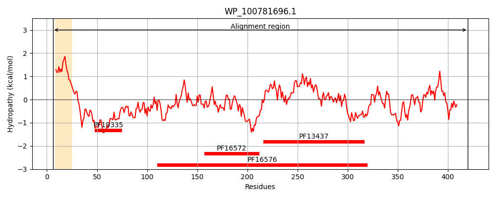
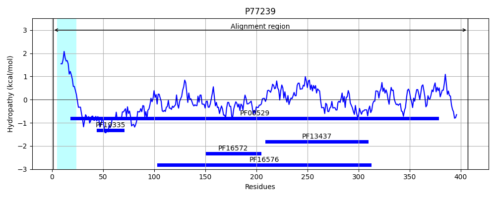
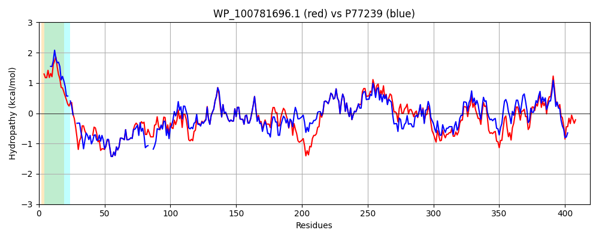

Hit Accession: P77239
Hit TCID: 2.A.6.1.4
Hit Description: gnl|BL_ORD_ID|11490 gnl|TC-DB|P77239|2.A.6.1.4 Putative copper efflux system protein cusB precursor - Escherichia coli.
Mach Len: 419
e:0.000000
Query TMS Count : 1
Hit TMS Count: 1
TMS-Overlap Score: 0.800000
Predicted Substrates:CHEBI:49551;copper(1+), CHEBI:49468;silver(1+)
BLAST Alignment:
Score: 1642 , Bit scores: 637 bits, E-value: 0.0e+00, Alignment length: 419, Percentage identity: 78
Query: 6 LKNTALILGSMVIGGALTAALYARWAPTHSAAPAAEQ----QRKVLFWYDPMYPNTRFDKPGKSPFMDMDLVPKYADEESTAAGAPGVRIDPTQTQNLGVKTAAVTRGPLRYAQTFPANISYNEYQYVIMQARAAGFINKVYPLTVGDKVKQGTPLLELTIPDWVEAQSEYLLLQETGGTATQVEGILERLRLAGMPDDDIRRLKATRKIQTRFTLKAPIDGVITAFDLRAGMNIAKDNVVAKIQGMDPVWVSVAVPESIAWLIKDASQFAIQVPAWPGKTFSISKWTLLPSVDSATRTLQLRLQVNNPDEALKPGMNAYLQLTSESEPMLLIPSKALIDSGDEQRVITVDNEGRFVPKRVQVFHESAGVTAIRSGLQEGEKVVASGLFLIDSEANISGALERMRAQAPDVTAPAAHAH 420
+K ALI+GSM+ GG ++AA + W A P AE+ +RK+LFWYDPMYPNTRFDKPGKSPFMDMDLVPKYADEES+A+G VRIDPTQTQNLGVKTA VTRGPL +AQ+FPAN+SYNEYQY I+QARAAGFI+KVYPLTVGDKV++GTPLL+LTIPDWVEAQSEYLLL+ETGGTATQ EGILERLRLAGMP+ DIRRL AT+KIQTRFTLKAPIDGVITAFDLRAGMNIAKDNVVAKIQGMDPVWV+ A+PESIAWL+KDASQF + VPA P KT +I KWTLLP VD+ATRTLQLRL+V+N DEALKPGMNA+LQL + SEPMLLIPS+ALID+G EQRVITVD +GRFVPKRV VF S GVTA+RSGL EGEKVV+SGLFLIDSEANISGALERMR+++ A HAH
Sbjct: 1 MKKIALIIGSMIAGGIISAAGFT-WVA--KAEPPAEKTSTAERKILFWYDPMYPNTRFDKPGKSPFMDMDLVPKYADEESSASG---VRIDPTQTQNLGVKTATVTRGPLTFAQSFPANVSYNEYQYAIVQARAAGFIDKVYPLTVGDKVQKGTPLLDLTIPDWVEAQSEYLLLRETGGTATQTEGILERLRLAGMPEADIRRLIATQKIQTRFTLKAPIDGVITAFDLRAGMNIAKDNVVAKIQGMDPVWVTAAIPESIAWLVKDASQFTLTVPARPDKTLTIRKWTLLPGVDAATRTLQLRLEVDNADEALKPGMNAWLQLNTASEPMLLIPSQALIDTGSEQRVITVDADGRFVPKRVAVFQASQGVTALRSGLAEGEKVVSSGLFLIDSEANISGALERMRSES------ATHAH 407 | Protein Hydropathy Plots: |
|---|
|  |  |
Pairwise Alignment-Hydropathy Plot:
|
|---|
|  |